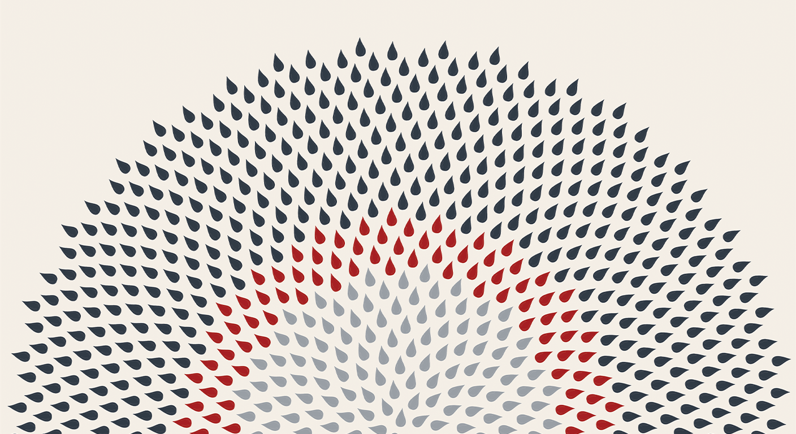
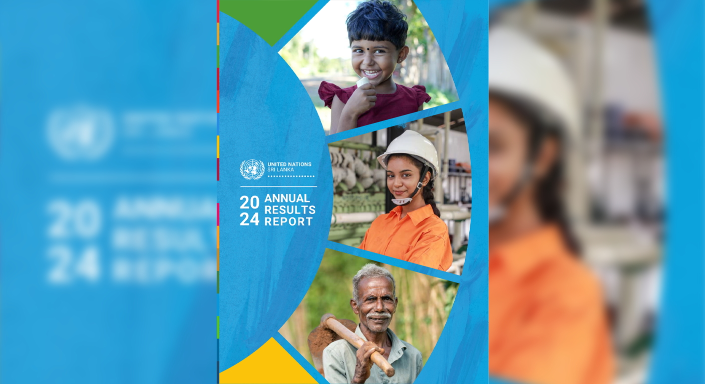
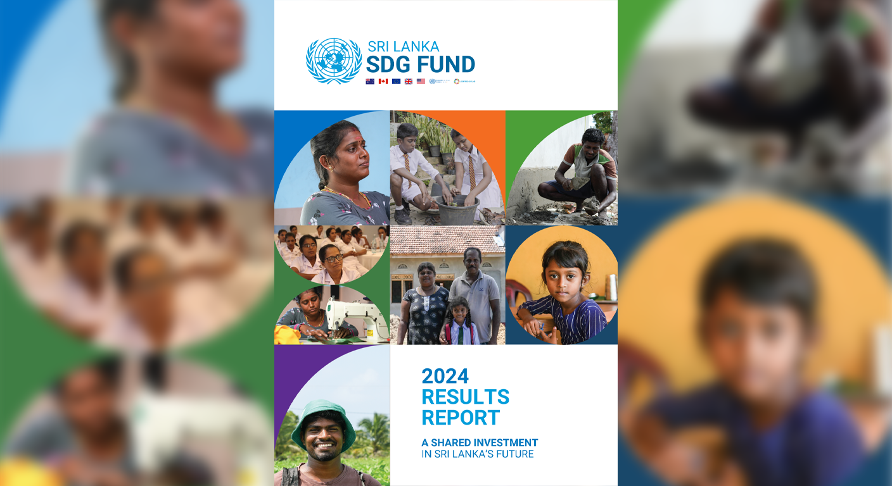
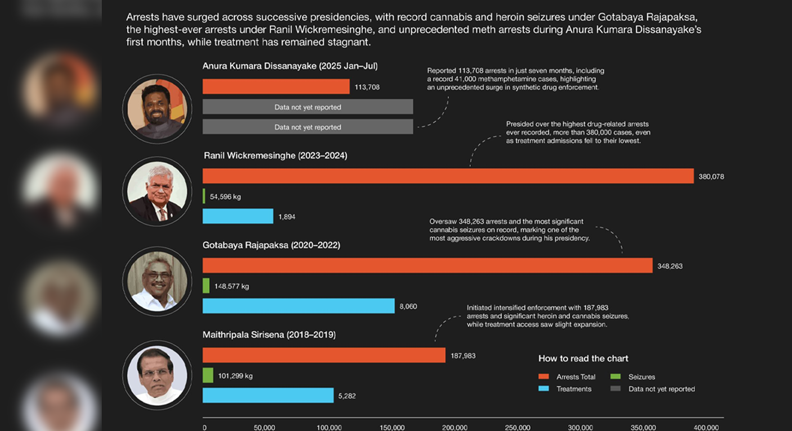
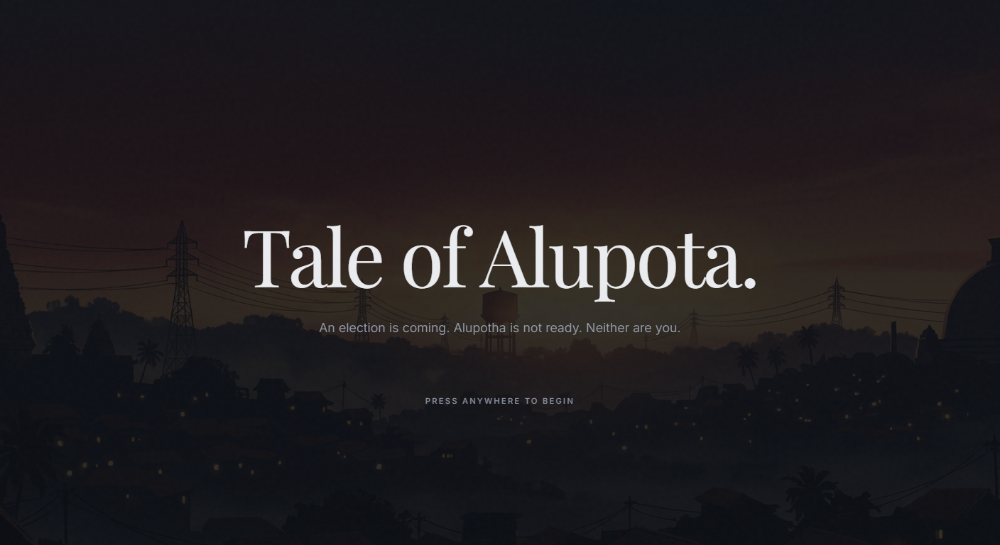
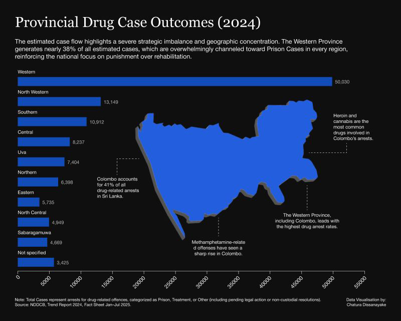
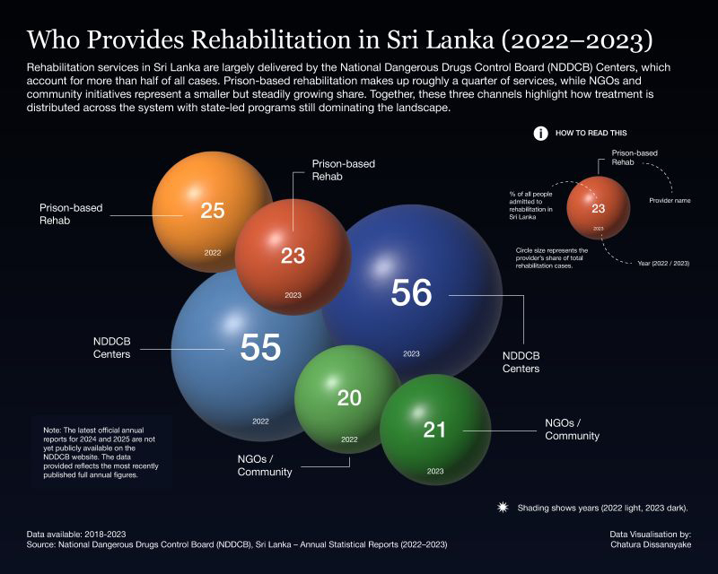

Sri Lanka Government Budget — Incomes & Expenditures
The Sri Lankan government budget summarises total revenue from taxes and other sources, and expenditures on public services and programs.
Data visualisation, reports, and communication design for organisations where clarity matters.
Selected Work

A data storytelling initiative documenting the true scale of Cyclone Ditwah's impact and recovery — revealing figures far worse than official early estimates.

Designing and coordinating the official UN Sri Lanka annual report — synthesising impact data across 8+ agencies into a cohesive national development narrative.

Translating the UN SDG Fund's multi-programme results into a compelling visual report for donors and policymakers, aligned with sustainable development goals.

An interactive scrollytelling experience mapping Sri Lanka's drug policy against public health outcomes for a general audience.

A browser-based interactive game teaching voters how democratic elections work — scenario-driven, accessible, and designed for first-time and young voters.
End-to-end UX research and interface design for a scalable financial management platform, focused on reducing cognitive load and improving user retention.
Data Storytelling

The Sri Lankan government budget summarises total revenue from taxes and other sources, and expenditures on public services and programs.

A visual reflection on growing through uncertainty, navigating chaos without a clear map, and slowly figuring things out one step at a time.

This spiral visualizes 338 initiatives that shaped Sri Lanka in 2024, with each dot representing an effort to strengthen communities and inform policy.

This visual narrative uses a broken lotus flower to symbolize the weight of 2,252 reported cases, with each petal representing 100 incidents.

The nation faces a widening gap between soaring arrests for drug-related offenses and stagnant access to treatment.

Sri Lanka faces a widening gap: drug-related arrests are soaring, especially for heroin, cannabis, and methamphetamines, while access to treatment remains stagnant.

Arrests have surged across successive presidencies, with record cannabis and heroin seizures under Gotabaya Rajapaksa.

The estimated case flow highlights a severe strategic imbalance and geographic concentration, reinforcing the national focus on punishment over rehabilitation.

Rehabilitation services are largely delivered by NDDCB Centers, accounting for more than half of all cases.
Thought Leadership
Notes on information design, process, and the decisions behind the work.
About

I'm an information designer based in Sri Lanka. I work across data visualisation, report design, and communication strategy, mostly for institutions, policy organisations, and research bodies that need complex information made clear and actionable.
Previously at Verité Research, the UN Resident Coordinator's Office, and the Department of National Planning. Now working independently, available for institutional partnerships, consulting engagements, and speaking.
Get In Touch
Open to freelance projects, institutional partnerships, and consulting engagements. If you have data that needs to communicate clearly, let's talk.
consultchatura@gmail.com